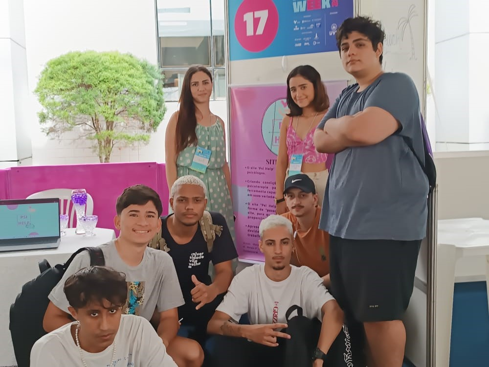
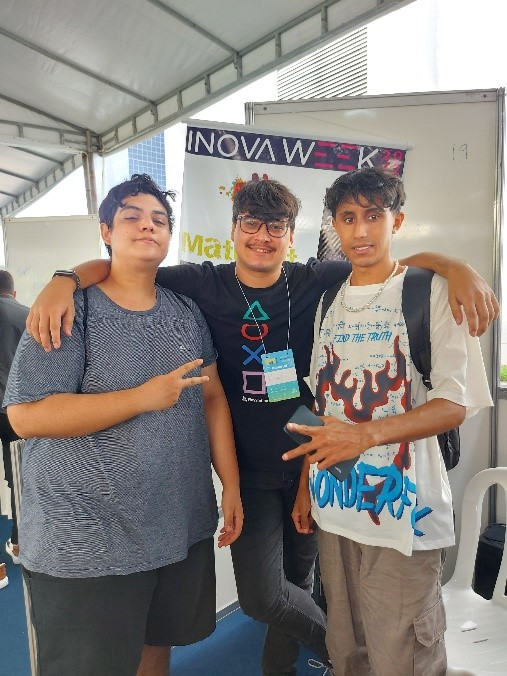

Os stands apresentavam muito bem as ideias e propostas do evento. alguns exemplos temos:
-Psi Help: O site do help como facilidade na busca por psicólogos.

-Beach Bike: O local de apoio entre bike que estaria apoiando o banco de cadeira de praia para facilitar a pessoa ao invés de segurar na mão, estaria facilitando o camponheiro.
-Match Fit: Seria no caso uma ajuda de acadêmico a ajudar a pessoas que está com dificuldade em como melhorar seu físico.

Positiva:Umas das melhores ideias que foi em minha visita foi:
O melhor em minha visão é o Match Fit , pois como sabemos cada dia mais pessoas precisam de ajuda com profissionais em relação á saúde .
Negativas:O que menos me interessou foi:
o psi help , pelos simples fato de já existir ideias parecidas e também sempre ter profissionais de prontidão
A funcionalidade no mercado das ideias seria ótima pois sabemos que cada dia mais precisamos de ideias novas para fazer o mundo girar , acho que todos os stands eram promissores e tinham boas ideias e sabemos que cada vez mais precisamos de novas ideias para ajudar no mercado de trabalho